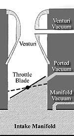

How The Stock Load-O-Matic Distributor Works. |
Here is a little clarification on how the "Load-O-Matic" distributor works, along with the infamous "Spark Control Valve" (or SCV). Not only is it important to know how they work, especially if your planning a carb swap, but how they work in conjunction with each other.

The "Load-O-Matic" style distributor was introduced in 1949 and was continued on all V8's until the 1967 model year. This arrangement was considered to be far superior to the "vacuum brake" used on '32-'48 Ford V8's, as it used a combination of manifold and venturi vacuum to improve high speed performance. The "Load-O-Matic" was also used on the Falcon Six due to it's "load sensing" design, which delivered good economy based on actual engine load for the day.
However the "Load-O-Matic" distributors are old technology, and while they may be OK for stock applications, they are a poor choice for the performance enthusiast.
Unfortunately the "Load-O-Matic" distributors were designed for simplicity and economy, rather than performance. The primary reason for this, is that the "Load-O-Matic" distributors have no provisions for mechanical advance. Instead they rely solely on relatively weak vacuum signals to sense changes in load and speed (rpm). As a result the distributors are very slow to provide spark advance when the engine is accelerated under load, making them a poor choice for performance applications. This is also why we don't like the Petronics Ignition for anything other than stock applications. While the Petronics Ignition may improve spark quality, your still stuck with the poor operation of the "Load-O-Matic" distributor, and your carburetor choices are limited to those that are equipped with a "Spark Control Valve", such as the Autolite 1100. Bottom line, if you want to improve throttle response and overall performance, you need to ditch the early "Load-O-Matic" distributor, swapping it for a late model or aftermarket distributor with mechanical (centrifugal) advance.
VACUUM ADVANCE
Manifold vacuum is
created during the down-stroke of the piston, which sucks air into the engine during the intake stroke. However it is only created when there is a restriction at the other end, such as a carburetor.
If the throttle plates in the carb are
tightly closed and the pistons are moving quickly, a high vacuum source is created. When the throttle plates are
cracked opened, there-by reducing the restriction, less vacuum is created. If the pistons are moving slowly and
the throttle plates are wide open, manifold vacuum will be very close to zero. As such, manifold vacuum is an excellent source to determine how hard the engine is
working. This is called "Load".
Let's go over this again..... When an engine is under light load, the manifold vacuum is high. However at wide open throttle, under heavy load, the manifold vacuum will approach zero, especially when the carburetor is properly sized. If the carb is to large for the application, manifold vacuum is reduced under all load conditions. In other words, "bigger is not better".
A properly sized carb, will be large enough to allow maximum airflow, yet small enough to maintain an adequate vacuum signal, which is commonly used to adjust ignition timing. The carburetor also uses the vacuum signal to determine how much fuel is required to achieve the proper air/fuel mixture. For more information see "Selecting the Right Carb". |
To understand how the "Load-O-Matic" distributor works, you need to know how Manifold Vacuum, Ported Vacuum, and Venturi Vacuum, differ from one another.
|  |
Manifold Vacuum is taken directly from the intake manifold, or from the base of the carb.
Ported Vacuum is actually manifold vacuum, however it has the ability to be switched ON or OFF. To accomplish this the vacuum port is positioned inside the carb body (not the venturi), slightly above the throttle plate, when the plate is in a close position. At idle, when the throttle plates are closed, the port is blocked off from manifold vacuum (OFF).
However as soon as the throttle plates are cracked opened, the port becomes exposed to
manifold vacuum (ON). As such, the throttle plates act like an "ON-OFF switch, turning manifold vacuum OFF at idle, and back "ON" when
the throttle plates are cracked open. This is called "Ported Vacuum".
Venturi Vacuum is taken from the narrowest point in the venturi chamber. As air enters the carburetor it passes through the venturi chamber, accelerating at the narrowest point. When the air accelerates it creates a low pressure area,
or vacuum, in the venturi chamber.
.When the engine is at idle .it requires very .little |
air, hence the airflow through the venturi is relatively slow, there-by creating a weak vacuum signal. As engine rpm's increase the demand for air also increases, hence the airflow through the venturi accelerates to met the demand, there-by creating a stronger vacuum signal. Therefore "Venturi Vacuum" is used to measure the engines rpm (or speed).
|
NOTE: There has been considerable debate over which is better, hooking the distributor to ported vacuum, or to manifold vacuum. Some say ported vacuum must be use, while others say you need to use manifold vacuum. We say use which-ever works best for your application. If the motor runs better on ported, then use ported vacuum. If it runs better on manifold vacuum, that's fine too. There is no right or wrong answer. Try both and see which one your motor likes best. In general terms, ported vacuum results in lower emissions, while manifold vacuum results in lower engine temps. It should also be noted that most engines idle a little higher on manifold vacuum, however this can be corrected by adjusting the idle speed on the carb. For more information, see "Vacuum Advance". |
SPARK CONTROL VALVE
Now that we have covered the differences in vacuum, we can talk about the "Load-O-Matic" distributor and how it works. In operation, the "Load-O-Matic" distributor and ignition system is very simple.
The Autolite 1100 carburetor uses a mixture of manifold vacuum (load) and venturi vacuum (speed) to supply the proper spark advance. As such, the "Load-O-Matic" distributor has a vacuum circuit that supplies manifold vacuum to the distributor. This is accomplished by positioning a vacuum port in the carb body slightly below (not above) the throttle plate, when in a close position. As such the distributor delivers manifold vacuum advance to the ignition system, at idle and light throttle.
As rpm's go up, manifold vacuum drops, and the vacuum signal becomes to weak to provide adequate spark advance at speed. Since the "Load-O-Matic" distributors didn't have a provision for mechanical advance, like most other distributors, they had to find another way to compensate for high speed operation. This is where the "Spark Control Valve" comes into play. As the manifold vacuum drops, the "Spark Control Valve" closes, and the carburetor automatically switches over to venturi vacuum thru an internal passage in the carb. As the engine runs faster and inhales more air, venturi vacuum increases, sending a stronger vacuum signal to the distributor. Hence the "Load-O-Matic" distributor advances to meet the demand for high speed operation.
The same applies at "Wide Open Throttle" (load), when the throttle plates are fully opened. As manifold vacuum drops, the "Spark Control Valve" closes, and the carb automatically switches over to venturi vacuum to supply the proper vacuum signal. As such, the "Load-O-Matic" distributor advances to meet the demand under load. However, if the engine load is light the engine needs even more advance as rpm's increase, for better fuel economy. Therefore, when the manifold vacuum gets high enough, the spark control valve opens and control of distributor vacuum advance passes back to the stronger manifold vacuum signal, thus meeting the need for more advance at high speed cruise.
Since the "Spark Control Valve" is proportional, the vacuum signal is normally a mixture of manifold vacuum and venturi vacuum, rather than one or the other, therefore compensating for both load and speed. This vacuum arrangement is very simple and effective, allowing the "Load-O-Matic" distributor to provide adequate spark advance in most circumstances.
While this system may be adequate for stock motors, we highly recommend installing a Duraspark or DUI distributor for improved performance. The reason for this is quite simply to explain. The "Load-O-Matic" uses Venturi Vacuum and a vacuum canister, which reacts slowly to the weak venturi vacuum signal. As such, the "Load-O-Matic" distributors are very slow to provide spark advance when the engine is accelerated under load.
The result is soggy acceleration, which the "Load-O-Matic" distributors are notorious for. On the other hand, the Duraspark and DUI distributors use mechanical advance (centrifugal weights in the distributor) to compensate for changes in rpm, which immediately swing out when rpm is increased. This is also the reason we don't recommend the Petronics Ignition system. While the Petronics Ignition increases spark quality, your still stuck with the poor operation of the "Load-O-Matic" distributor.
VACCUM CANISTERS
Load-O-Matic
The "Load-O-Matic" distributor uses manifold vacuum to compensate for load, venturi vacuum to compensate for speed, and/or a combination of both, which is supplied by the Spark Control Valve. We should also note that venturi vacuum is a relatively weak vacuum signal, in comparison to manifold or ported vacuum. The diaphragm in the vacuum canister is counter-balanced by two springs sitting at angles to each other, which are visible when the distributor cap is removed. The springs are attached to two eccentric post, which can be turned to adjust the advance curve. Therefore the "Load-O-Matic" vacuum canister replies on a combination of manifold vacuum and venturi vacuum to provide the correct amount of advance.
Conventional
A conventional distributor uses manifold or ported vacuum to compensate for load, and centrifugal weights to compensate for speed. The weights are counter-balanced with springs, which can be changed to adjust the advance curve. When an engine has a light load, the vacuum signal is high, whereas at the highest load or wide open throttle, the vacuum signal will approach almost zero. As such the vacuum canister on a conventional distributor, sensing manifold vacuum only, adds more advance when cruising and less to none when you have the "pedal to the metal". On the other hand, the centrifugal weights continually increase the spark advance as rpm's increase.
NOTE: The spark control valve looks a lot like a Holley power valve. It works like a power valve, but instead of passing fuel, it passes air.
 |
Autolite 1100
carb with a "Spark Control Valve" (circled) |
MIXING IT UP
The "Load-O-Matic" distributor and the "Autolite 1100" carburetor were designed to work together, therefore if you're doing a carb swap, more than likely you'll need to swap the distributor as well. Failure to do so will result in an engine that runs poorly, especially during acceleration.
Distributor Swaps
The "Load-O-Matic" distributor uses the "Spark Control Valve" (a spring and diaphragm mechanism), to determine the proper amount of vacuum advance, which is commonly a mixture of manifold vacuum (sensing load) and venturi vacuum (sensing rpm). On the other hand, a conventional distributor uses mechanical weights (speed) and manifold vacuum (load), to provide the proper amount of ignition advance for any given situation.
While you can use a Duraspark or DUI distributor with a stock Autolite 1100 carb, both of these distributors utilize a mechanical advance mechanism that was designed to operate with ported or manifold vacuum. As such they will not operate properly using the vacuum port on the stock Autolite 1100 carburetor. To correct this you need to plug the port on the carb, so you don't have a vacuum leak, and run the vacuum line from the Duraspark or DUI distributor to a manifold vacuum source. This can be accomplished using an existing vacuum source on the intake manifold, or the bottom of the carb adaptor. Or you can create a new source by drilling a hole in the intake manifold and installing a vacuum barb. However, you'd need to remove the cylinder head before drilling, to make sure the manifold is free of any debris that could work down into the cylinders and severely damage the motor.
So...what happens if you do try to use the vacuum port on the Autolite 1100 carb?
At idle, the "Spark Control Valve" is open, sending manifold vacuum to the distributor. As such, the engine will idle just fine. However
the "Spark Control Valve" will not provide the proper vacuum signal under load and/or speed. All engines need more advance when cruising, and less to none at wide open throttle. However since you are now using the carb (venturi vacuum advance) and the distributor (mechanical advance) to compensate for speed, the ignition system will receive to much advance at cruise and wide open throttle. As a result, the engine may chug and jerk from the over-advanced condition at cruise.
Carburetor Swaps
If you're swapping carbs, there's a very good chance you'll need to swap the distributor as well. The "Load-O-Matic" distributor was designed to work with a "Spark Control Valve", which to my knowledge, was only found on the Autolite 1100 carbs. The only exception to this is the new Vaporizer carb, which we will discuss momentarily.
Most carbs, like the popular 32/36 Weber DGV, the Holley 350 or 500, or any of the Autolite 2BBL carbs, are designed to supply ported vacuum. Therefore the engine would idle just fine. However since neither the carb or the distributor have any means of sensing rpm's (or speed) the distributor cannot provide the proper amount of spark advance at cruse. With the spark advance severely retarded, the engine would lack power, run very poorly, and suffer from poor gas mileage.
As we explained earlier, installing a newer carb with a "Load-O-Matic" distributor should be avoided.
However the one exception to this rule is the new Vaporizer, since it's offered with (or without) a "Spark Control Valve", depending on the model year. If you plan to keep the stock "Load-O-Matic" dizzy you would need to order the 63-67 Vaporizer, since it comes with a "Spark Control Valve" and designed to work with the "Load-O-Matic" distributor. However if you plan to swap the distributor you'd need to order the 68-69 Vaporizer, since it comes without the "Spark Control Valve", which is designed to work with the stock 68-69 distributor. Another option, although extreme, would be to plug off venturi vacuum port so the carburetor supplies manifold vacuum only. For more information on the Vaporizer click here.
NOTE: Installing a Petronics Ignition in the "Load-O-Matic" distributor makes no difference in the outcome. If you keep the "Load-O-Matic" distributor, you must use the stock Autolite 1100, or the early (63-67) Vaporizer with a "Spark Control Valve".
NOTE: If you swap the carb to anything other than an Autolite 1100, or the early (63-67) Vaporizer, without a "Spark Control Valve", you must swap the distributor as well.
NOTE: If you install the popular 32/36 Weber DGV or an Autolite/Holley 2V carb, you must swap the distributor as well. You'll need a distributor that has provisions for mechanical advance, and designed to operate with ported or manifold vacuum.
NOTE: When hooking up your vacuum advance, we recommend manifold vacuum whenever possible. However that being said, we have seen a few motors that actually ran better using ported vacuum. As such, you might want to try manifold vacuum first, then switch to ported vacuum, and see which works best for your application. For more information, see our tech article on Vacuum Advance.
COMMON PROBLEMS
Typical problems with the "Load-O-Matic" distributor and/or the Autolite 1100 carb include leaky vacuum lines, failed or stuck "Spark Control Valve", clogged vacuum passages, worn out distributor advance plates, or worn out vacuum advance diaphragms. Any of these problems or failures can lead to a lack of full spark advance, causing poor performance, poor gas mileage, and potential overheating.
Written By: |
MustangSix and AzCoupe |
 
|


{kind=link}